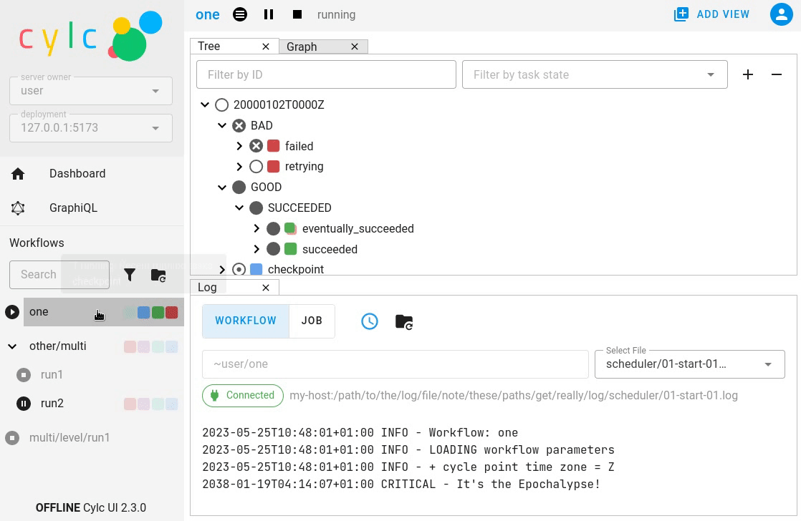
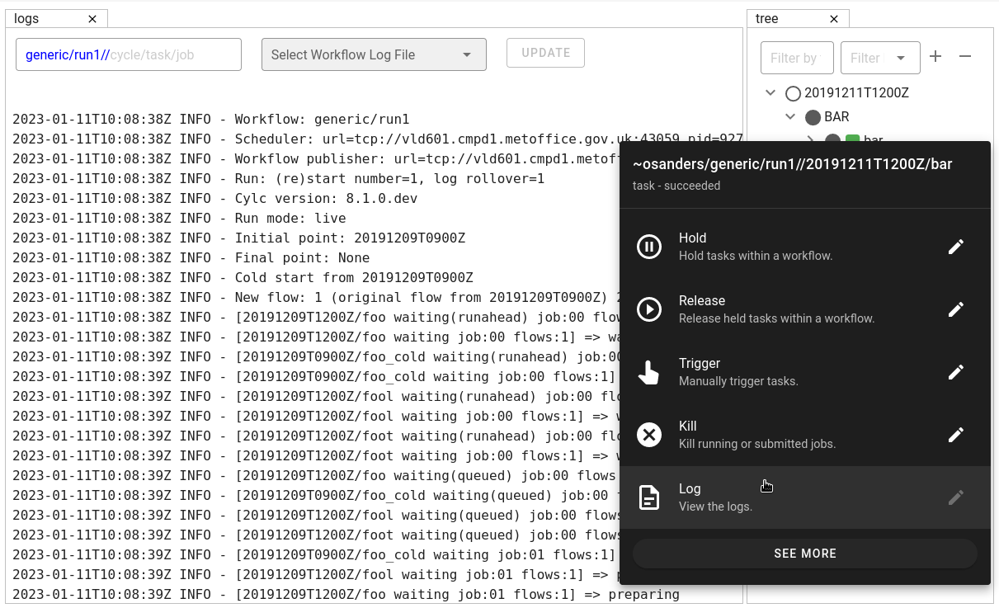

Changes
This page contains a summary of significant changes across all Cylc components for each release.
For more detail see the component changelogs:
Cylc 8.4
Cylc Remove
Cylc Remove now allows removing tasks which are no longer active, making it look like they never ran. Removing a running task will now kill that task.
The cylc remove command now has the --flow option, allowing removal
of a task from specific flows.
Tasks removed from all flows are retained in the workflow database with
flow=none for provenance.
{kind=link}
See also
See Remove Tasks to see an example of this feature in action.
Skip Mode
Tasks can now be run in “skip” mode where they complete their required outputs instantly. Tasks can be configured to run in skip mode either in the workflow configuration or by broadcasting.

cylc set --out skip will set outputs for a task as if the task has run
in skip mode. The task outputs delivered by skip mode can be customized using
[runtime][<namespace>][skip]outputs or defaults to behaviour
described in Task Outputs.
This can be used to skip a cycle or a task (for a full example see I want to Skip a cycle of tasks and allow the workflow to continue).
It may also be useful for Efficient Inter-Family Triggering and for Parameter Exclusion.
See also
Trigger When Paused
Tasks can now be triggered and will run immediately while the workflow is paused.
{kind=link}
See also
Pause The Workflow And Trigger Tasks One By One for an example of this feature.
EmPy Support Removed
Support for the EmPy template processor (an alternative to Jinja2) has been removed.
Info View
An info view has been added, displaying
{kind=link}
Cylc 8.3
Manually setting task outputs and prerequisites
At Cylc 8.3.0, the cylc set-outputs command has been replaced by the new
cylc set command.
The cylc set-outputs command made it look like an output had been generated
to downstream tasks, but did not update the task status to match. As a result,
it was often necessary to use cylc remove in combination with cylc
set-outputs.
The new cylc set command is able to directly set task outputs as if they
had completed naturally, making the command more intuitive and avoiding the
need for cylc remove. It can also set prerequisites, as if they were satisfied naturally.
For example, say there’s a failed task holding up your workflow and you want Cylc to continue as if the task had succeeded. Here are the interventions you would need to perform with Cylc 8.2 and 8.3 side-by-side.
Cylc 8.2 (set-outputs) |
Cylc 8.3 (set) |
# let downstream tasks run:
cylc set-outputs <task>
# remove the failed task:
cylc remove <task>
|
# tell Cylc that the task succeeded:
cylc set <task>
|
{kind=link}
{kind=link}
Tui
The Tui (terminal user interface) is a command line version of the Gui. You can use it to monitor and control your workflows.
There has been a major update to Tui at Cylc 8.3.0:
Larger workflows will no longer cause Tui to time out.
You can now browse all your workflows including stopped workflows.
You can monitor multiple workflows at the same time.
The workflow and job logs are now available from within Tui.

N-Window selector in the GUI
The n-window determines how much of a workflow is visible in the GUI / Tui.
The n=0 window contains only the active tasks
(i.e. queued, preparing, submitted or running tasks).
The n=1 window, also contains tasks one “edge” out from active tasks
(i.e. the tasks immediately upstream or downstream of active tasks).
The n=2 window, also contains tasks two “edges” out from active tasks,
and so on.
It is now possible to change the window extent in the GUI via a button in the toolbar allowing you to see tasks further back in the workflow’s history.

Note
This is currently a per-workflow setting so changing the n-window in one browser tab will also change it in other browser tabs and Tui sessions.
Warning
Using high n-window values with complex workflows may have performance impacts.
Group by cycle point in the graph view
The graph view now has an option to group tasks by cycle point.
{kind=link}
Gantt View
The GUI now has a Gantt view option:

Analysis View
New Analysis added - a layout which plots run times against cycle points.

Completion Expressions
When a task achieves a final status, its outputs are validated against a “completion expression” to ensure that it has produced all of its required outputs. If a task fails this validation check it is said to have “incomplete outputs” and will be retained in the active window pending user intervention.
This completion expression is generated automatically from the graph. By default, tasks are expected to succeed, if you register any additional required output in the graph, then these must also be produced.
At Cylc 8.3.0 it is now possible to manually configure this completion expression for finer control. This is particularly useful for anyone using custom outputs.
For example, mytask must produce one of the outputs x or y to pass
the completion expression configured here:
[runtime]
[[mytask]]
completion = succeeded and (x or y)
[[[outputs]]]
x = output-x
y = output-y
For more information, see the reference for the
[runtime][<namespace>]completion configuration.
Workflow State Triggers & Commands
Workflow state xtriggers and command now take Cylc universal IDs instead of separate arguments:
For example, you can (and should) now write:
# On the command line
- cylc workflow-state my-workflow --point 20240101 --task mytask --message "succeeded"
+ cylc workflow-state my-workflow//20240101/mytask:succeeded --triggers
# In the flow.cylc file
- my_xtrigger = workflow_state(
- workflow="my-workflow",
- task="mytask",
- point="20240101",
- message="succeeded"
- )
+ my_xtrigger = workflow_state('my-workflow//20240101/mytask:succeeded', is_trigger=True)
Important
The new workflow state trigger syntax can use either the trigger or message from
trigger=message in [runtime][<namespace>][outputs].
The trigger and message are the same for the most common use cases (succeeded and started)
but may differ for other outputs, namely custom outputs.
Note
The suite-state xtrigger has been reimplemented for compatibility with
Cylc 7 workflows.
Cylc 8.2
UI now remembers workspace tab layout
Added in version cylc-uiserver: 1.4.4
The UI now remembers the layout of your workspace tabs when you navigate away from that workflow. Note that this only applies per browser session.
{kind=link}
Cylc ignores $PYTHONPATH
Cylc now ignores $PYTHONPATH to make it more robust to task
environments which set this value. If you want to add to the Cylc
environment itself, e.g. to install a Cylc extension,
use a custom xtrigger, or event handler use $CYLC_PYTHONPATH.
Upgrade To The Latest Jupyter Releases
Added in version cylc-uiserver: 1.4.0
The Cylc UI Server has been updated to work with the latest releases of Jupyter Server and Jupyter Hub.
If you are utilising Cylc’s multi-user functionality then your configuration will require some changes to work with these releases.
See Authorizing Others to Access Your Workflows for more details
Added in version cylc-uiserver: 1.3.0
You can now configure the view which is opened by default when you navigate to a new workflow in the GUI. Navigate to the settings page to select your chosen view.

In the future we plan to support configuring a layout of multiple views and configuring certain options on those views.
Reload
Added in version cylc-flow: 8.2.0
When workflows are
reloaded,
(e.g. by cylc reload), Cylc will now pause the workflow and wait for any
preparing tasks to be submitted before proceeding with the reload.
Once the reload has been completed, the workflow will be resumed.
You can now see more information about the status of the reload in the workflow status message which appears at the top of the GUI and Tui interfaces.
Cylc 8.1
Warning
Workflows started with Cylc 8.0 which contain multiple flows cannot be restarted with Cylc 8.1 due to database changes.
Analysis View
Added in version cylc-uiserver: 1.2.2
The web UI also has a new view for displaying task queue & run time statistics.
{kind=link}
Graph View
Added in version cylc-uiserver: 1.2.0
The web UI now has a graph view which displays a visualisation of a workflow’s graph:

Family & cycle grouping as well as the ability to view graphs for stopped workflows will be added in later releases.
Log View
Added in version cylc-uiserver: 1.2.0
The web UI now has a log view which displays workflow and job log files:
{kind=link}
Support for viewing more log files, syntax highlighting, searching and line numbers are planned for future releases.
Edit Runtime
Added in version cylc-uiserver: 1.2.0
The web UI now has a command for editing the [runtime] section
of a task or family.
{kind=link}
Any changes made are broadcast to the running workflow.
Combined Commands
Added in version cylc-flow: 8.1.0
Two new commands have been added as short-cuts for common working patterns:
cylc vipValidate, install and plays a workflow, equivalent to:
cylc validate <path> cylc install <path> cylc play <id>
cylc vrValidate and reinstall a workflow, then either: - reload the workflow if it is running. - restart the workflow if it is stopped.

For more information see the command line help:
cylc vip --help
cylc vr --help
Bash Completion
Added in version cylc-flow: 8.1.0
Cylc now provides a high performance Bash completion script which saves you typing:
Cylc commands & options
Workflow IDs
Cycle points
Task names
Job numbers

Cylc 8.0
The first official release of Cylc 8.
For a summary of changes see the migration guide.